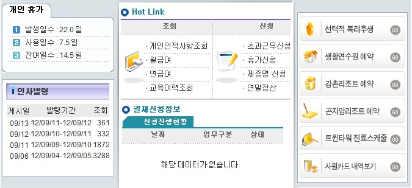

|
개요 및 신청절차 | |
 |
개요 | |
| El-Office 상단의 e-HR Tab을 클릭하면 e-HR시스템 접속되며, 모든 메뉴를 한눈에 확인가능하다. 개인인사정보와 HR결재함으로 메뉴가 구분되어 있으며, 초기화면에서는 인사관련 공지사항 및 신청진행현황 등을 확인할 수 있다. | ||
 |
화면사용법 및 유의사항 | |
| <그림 1. 초기화면> | ||
|  | ||
| 1) “알림” Field에서는 인사관련 공지사항을 확인할 수 있다. | ||
| 2) “휴가실적정보” Field에서는 개인의 휴가 사용 현황을 확인할 수 있다. | ||
| 3) “신청진행현황” Field에서는 근태,복리후생, 제증명서 신청시 각 신청내용별 결재 진행현황을 확인할 수 | ||
| 있으며, 각 신청 목록 제목을 클릭하면 본인이 신청한 내용에 대해 보다 상세하게 조회해볼 수 있다. | ||
| 4) “Hot Link” Field에서는 e-HR시스템에서 자주 사용하는 메뉴들이 등록되어있으며, 각 메뉴를 클릭하면 | ||
| 조회 또는 신청화면으로 바로 이동하게된다. | ||